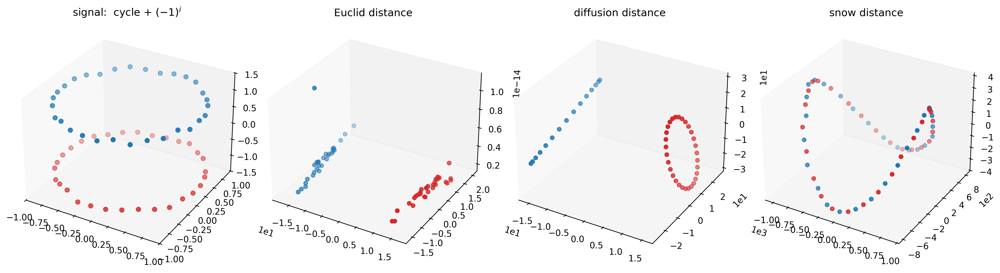
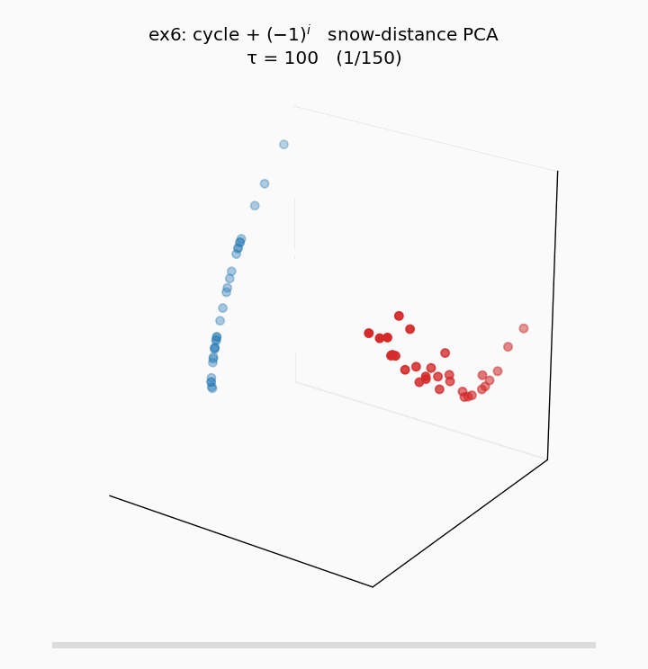
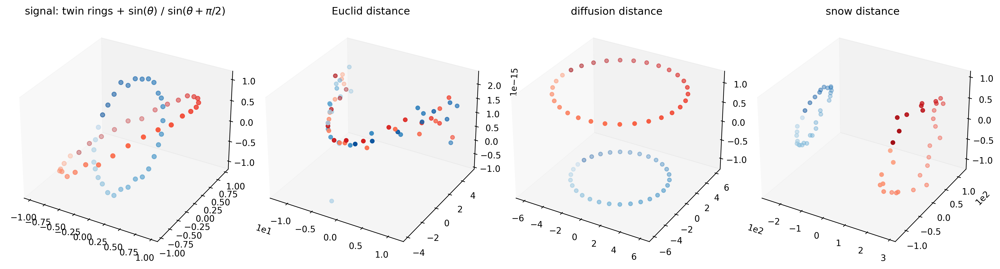
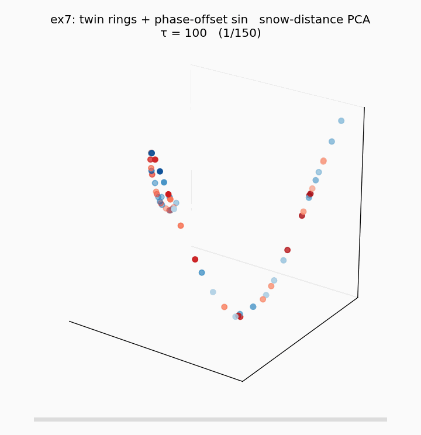
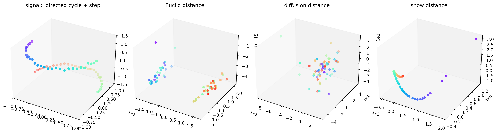
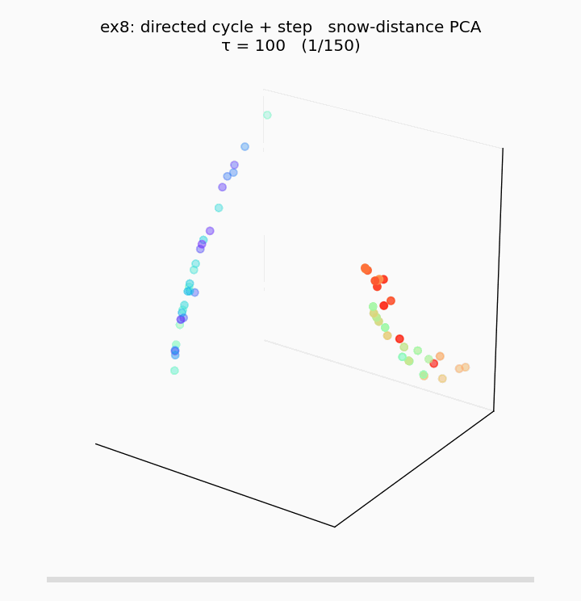
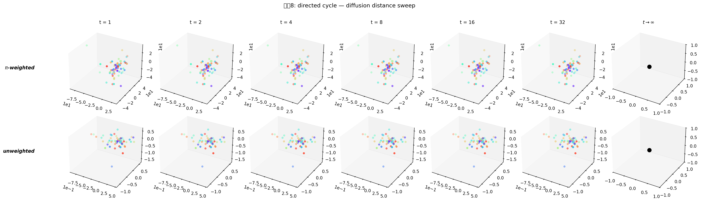

연구 ▷ HST ▷ 추가예제 — 선형결합 밖의 embedding (예제6, 7, 8)
0. 동기
Wt궤적과 선형결합 path의 편차 에서 정의한 편차
\[\Delta(t) := \big\| D(t) - D^{\mathrm{lin}}(\alpha(t)) \big\|, \qquad D^{\mathrm{lin}}(\alpha) = (1-\alpha)D^E + \alpha D^G\]
는 HST 의 \(D(t)\) 궤적이 두 극한 \(D^E, D^G\) 의 convex combination 위에 놓이지 않음 을 측정한다. 예제2 (ring + 반원 step), 그리고 그 변형들 (path + step, ring + cos(2θ), MCU 실데이터) 은 모두 \(\Delta\) 가 존재하기는 하나 HST 만의 “선형결합 밖” 기여가 시각적·원리적으로 약해 폐기되었다.
본 포스트는 공간과 신호가 원리적으로 다른 방식으로 상호작용하도록 설계된 세 가지 예제를 구현·기록한다. 각각 Euclid 와 diffusion 이 어떤 이유에서 \(D^{\mathrm{HST}}\) 에 원천적으로 접근 불가능한지 가 서로 다르다.
| # | 공간 \(W\) | 신호 \(f\) | HST 만의 원리 |
|---|---|---|---|
| 예제6 | \(C_{60}\) 양방향 cycle | \(f_i = (-1)^i\) (Nyquist) | parity × position의 outer product (rank-2 sum 으론 불가) |
| 예제7 | twin concentric rings | 내·외 ring 위상차 \(\pi/2\) 인 \(\sin\) | 두 부분공간 간 latent isomorphism (회전) |
| 예제8 | directed cycle (shift \(W_{i,i+1}=1\)) | 반원 step | 시간 비가역성 — symmetric distance 의 공리적 한계 |
코드: 260424_예제6_parity_cycle.py, 260424_예제7_twin_rings.py, 260424_예제8_directed_cycle.py
공통 파라미터: \(n = 60\), \(b = 0.05\), \(\tau = 10^6\) (Harris 극한 근처까지 수렴), diffusion \(t = 4\) (π-가중, Coifman–Lafon). 각 실험 figure 는 signal / Euclid / diffusion / snow 4-panel PCA-3D.
참고:
pyhst.distances.diffusion_distance는 본 실험 과정에서 원본 2022 노트북의 scalar-normalize heuristic 에서 정통 Coifman–Lafon (\(D^{-1} W\) row-stochastic + \(\pi\)-weighted \(\ell^2\)) 로 수정되었다. 자세한 내용은 §5 sweep 참고.
1. 예제6 — Alternating parity on cycle
1.1 Setup
공간. \(n = 60\). \(C_n\) 양방향 cycle; circulant matrix \(W = \mathrm{circ}(c)\) with \(c_1 = c_{n-1} = 1\), 즉
\[W_{ij} = \mathbb{1}\{\,|i - j| \equiv 1 \pmod n\,\}, \qquad i, j \in \{0, \ldots, n-1\}.\]
각 노드는 정확히 두 이웃 (좌·우) 과 연결, degree 2 regular.
신호. Nyquist 주파수:
\[f_i = (-1)^i + \varepsilon_i, \qquad \varepsilon_i \sim \mathcal{N}(0, 0.05^2).\]
짝수 index 는 \(+1\), 홀수 index 는 \(-1\). 공간 인접 (\(|i-j|=1\)) 관계는 항상 부호 반대 — 공간 구조와 신호 구조가 정반대.

snow 임베딩의 τ-수렴 animation (\(\tau: 10^2 \to 10^7\), 로그 스케일 150 프레임, per-frame [-1,1]³ 정규화):

\(\tau\) 가 작을 때 (Euclid 근처) 는 두 parity 가 두 덩어리로 시작하고, \(\tau\) 가 증가함에 따라 cycle 위 위치 정보가 snow ground 에 누적되며 두 parity class 가 각자 곡선을 그리는 \(\mathbb{Z}_2\)-cover 형태로 수렴. Harris 극한 근접.
1.2 왜 선형결합 \((1-\alpha)D^E + \alpha D^G\) 가 \(D^{\mathrm{HST}}\) 에 접근 불가능한가
두 극한 metric의 정보 내용 을 먼저 관찰한다.
\(D^E\) 는 binary indicator.
\[D^E_{ij} = (f_i - f_j)^2 = \begin{cases} 0 & i \equiv j \pmod 2 \\ 4 & i \not\equiv j \pmod 2 \end{cases}\]
즉 오직 parity 일치/불일치만 담긴 rank-1 metric. 같은 parity 노드 60개 중 2개는 \(D^E = 0\) — cycle 상 위치와 무관.
\(D^G\) 는 parity 를 완전히 모른다. \(P = W/\text{colsum}(W)\) 가 cycle convolution 이므로 \(P^t\) 행들의 \(\ell_2\) 거리는 순수하게 cycle index 차 \(|i - j| \bmod n\) 의 함수. parity 정보 0.
두 metric은 서로 정보 공간이 완전히 disjoint — 하나는 parity 만, 다른 하나는 position 만. 이들의 convex combination은 두 독립 축의 값을 더한 것 에 불과하며, 임베딩은 “cycle (position 축) + parity gap (신호값 축)” 의 Cartesian product — 2-layer cylinder, 즉 예제6 figure 의 맨 왼쪽 signal panel 그 자체의 기하.
HST 는 이 두 정보의 outer product 를 만든다. snow panel 에서 두 parity class (파랑·빨강) 는 각자 원을 그리며 서로 interleave 하는 구조를 보인다. 이는 다음을 의미한다:
- 두 노드가 같은 parity 임에도 (\(D^E = 0\)) cycle 상 위치가 다르면 snow distance \(> 0\).
- 두 노드의 cycle 거리가 같아도 (\(D^G\) 같음) parity 가 다르면 snow distance 가 다른 값.
즉 snow distance 가 parity 와 position 의 cross term 을 담는다. rank-2 sum 으로는 cross term 이 원리적으로 생성되지 않는다 (sum 의 bilinear form 은 outer product 가 아니다).
1.3 메커니즘
Nyquist 신호에서 random walker 의 block 조건 \(f_{\text{next}} \ge f_{\text{cur}}\) 은 이웃 신호가 반대 라 거의 매 step 실패 → block → reset. 각 노드의 snow ground 는 block 빈도와 reset 시의 initdist 를 통해 parity × position 복합 축적을 받으며, 이 축적의 시간 sequence 가 두 축의 비가환 결합을 distance 로 기록한다.
2. 예제7 — Phase-offset twin rings
2.1 Setup
공간. 두 동심 ring, 각 \(n_1 = n_2 = 30\) 노드 (총 \(n = 60\)):
\[\begin{aligned} \text{inner: } & (x_i, y_i) = 0.5 \cdot (\cos\theta_i, \sin\theta_i), & \theta_i = -\pi + \tfrac{2\pi}{30}\, i, & & i = 0, \ldots, 29 \\ \text{outer: } & (x_j, y_j) = 1.0 \cdot (\cos\theta_j, \sin\theta_j), & \theta_j = -\pi + \tfrac{2\pi}{30}\, j, & & j = 0, \ldots, 29 \end{aligned}\]
2D Gaussian kernel:
\[W_{uv} = \exp\!\left(-\frac{\|p_u - p_v\|^2}{2 \cdot 0.25^2}\right) - \delta_{uv}.\]
Intra-ring 인접 (ring 안에서 바로 옆 노드) 은 거리 \(\approx 0.105\) (inner) 또는 \(\approx 0.21\) (outer) → \(W \in [0.7, 0.92]\). Inter-ring 최단 거리는 \(r_\text{out} - r_\text{in} = 0.5\) → \(W \approx 0.135\). 따라서 intra 는 강한 연결, inter 는 약한 자연 bridge.
신호. 위상 \(\pi/2\) 어긋남:
\[f_i^{\text{in}} = \sin\theta_i + \varepsilon, \qquad f_j^{\text{out}} = \sin(\theta_j + \pi/2) + \varepsilon, \qquad \varepsilon \sim \mathcal{N}(0, 0.05^2).\]
inner ring 은 cosine-like (원래 sine), outer ring 은 \(\pi/2\) 회전된 sine.

snow 임베딩의 τ-수렴 animation (\(\tau: 10^2 \to 10^7\)):

초기 frame 은 두 ring 이 Euclidean 기반 신호 값 분포에 가깝게 뒤섞여 있다가, \(\tau\) 가 커지면서 bridge 를 통해 운반된 위상 정보가 snow ground 에 축적되며 두 ring 이 각자 고리를 형성하고 상대 회전각 \(\pi/2\) 가 embedding 에 새겨지는 twisted cylinder 로 수렴.
2.2 왜 선형결합이 접근 불가능한가
\(D^E\) 는 위상차를 모른다. 두 ring 의 신호 marginal 분포는 모두 \(\sin\) 의 marginal — \([-1, 1]\) 구간의 유사한 분포. \(D^E_{uv} = (f_u - f_v)^2\) 는 두 노드의 신호 값만 비교하므로 “inner ring 의 \(\theta_i = 0\) 노드 (\(f = 0\))” 와 “outer ring 의 \(\theta_j = \pi/2\) 노드 (\(f = 0\))” 가 같은 점 으로 보인다. 두 ring 이 얼마나 회전되어 서로를 보고 있는가 라는 정보는 marginal 에 없다.
\(D^G\) 는 공간만 본다. diffusion distance 는 공간 인접 구조만 반영 → 두 동심원이 각각 원 으로, 둘 간 상대 회전은 0.
선형결합의 한계. \((1-\alpha) D^E + \alpha D^G\) 는 “두 ring 을 위상 정렬한 채로 z-축 (신호값) 에 따라 접은” 형태만 가능. 위상차 \(\pi/2\) 는 두 ring 의 상호관계 에 담긴 정보이므로 marginal·marginal 의 sum 으로는 생성되지 않는다.
HST 는 bridge 에서 phase 를 운반한다. inner ring 노드 \(i\) 에서 출발한 random walker 는 약한 inter-ring edge 를 통해 outer ring 으로 넘어가는데, 도달하는 outer 노드의 신호는 \(i\) 의 신호와 위상 \(\pi/2\) 어긋남. snow ground 에 이 위상 불일치 패턴 이 공간적으로 기록되고, snow distance 에서 두 ring 의 상대 회전각으로 복원된다.
snow panel 에서 관찰: 두 ring 이 각자 곡선을 그리되 서로 회전된 채로 겹침 (twisted cylinder). 이 twist 각도가 설계한 \(\pi/2\) 를 반영.
2.3 수학적 관점
두 metric space \((M_1, d_1)\), \((M_2, d_2)\) 사이에 latent isomorphism (회전 \(R\)) 이 있을 때, distance-only 관점에서는 \(M_1, M_2\) 를 독립된 공간으로 본다 (marginal 정보만). HST 의 random walk 은 이 두 공간을 실제로 움직이며 연결 하므로 isomorphism 의 angle 을 embedding 에 새긴다. 이는 distance-based linear methods 의 원리적 한계를 보여준다.
3. 예제8 — Directed cycle (shift matrix) + step
3.1 Setup
공간. \(n = 60\). 단방향 shift matrix:
\[W_{ij} = \mathbb{1}\{\,j \equiv i + 1 \pmod n\,\}, \qquad W = \mathrm{circ}(c), \quad c_{n-1} = 1.\]
각 노드는 정확히 하나의 out-neighbor (\(i \to i+1\)) 를 가지며 \(W \ne W^\top\). 이 \(W\) 는 \(\mathrm{DFT}\) 가 고유벡터인 전형적 shift matrix 로, 방향성이 가장 순수하게 부각된다.
신호. 반원 step (대칭 깨기):
\[f_i = \begin{cases} +1 & y_i < 0 \\ -1 & y_i \ge 0 \end{cases} + \varepsilon_i, \qquad y_i = \sin\theta_i.\]
(노드들이 unit circle 위에 배치된다고 상상; 단 실제 그래프 구조는 \(W\) 만으로 결정, 좌표는 시각화·색 라벨용.)

snow 임베딩의 τ-수렴 animation (\(\tau: 10^2 \to 10^7\)):

초기 frame 에서 signal 기반 두 덩어리로 시작해, \(\tau\) 가 증가하면서 방향성 random walk 이 step 경계로부터 신호 history 를 쓸어 담아 방향성 있는 1D manifold (U-curve) 로 수렴. diffusion distance 가 어떤 \(t\) 에서도 붕괴한 blob 에 머무는 것과 대조.
3.2 왜 선형결합이 접근 불가능한가 — 가장 강한 주장
Distance 는 공리적으로 symmetric. 임의의 distance function \(d\) 는 \(d(u, v) = d(v, u)\). 그래서 \(W \ne W^\top\) 인 그래프에서 어떤 distance를 정의하더라도 대칭화를 거쳐야 한다. 대칭화의 순간 방향성은 복구 불가능하게 소실된다.
\(D^E\) 는 신호 marginal 만 — 두 덩어리 (±1 기반).
\(D^G\) (diffusion) 는 완전히 degenerate. \(P = W\) 가 이미 stochastic 이고 \(P^t\) 가 shift-by-\(t\) permutation. 두 서로 다른 노드의 \(P^t\) 행은 완전히 disjoint support (한 점씩 1, 나머지 0). \(\ell_2\) 거리는 모든 서로 다른 쌍에 대해 정확히 \(\sqrt{2}\) 로 동일 → shape 완전 붕괴 (figure 의 diffusion blob).
선형결합의 한계. degenerate blob + 두 덩어리의 어떤 선형결합도 방향성 정보를 복구할 수 없다. 특히 \(W\) 와 \(W^\top\) 은 동일한 \(D^E\) 와 (대칭화 후) 동일한 \(D^G\) 를 만들기 때문에 distance-based approach 자체가 방향성의 부호조차 구분 불가.
HST 는 random walk 으로 방향성을 시간축에 기록. walker 는 \(i \to i+1 \to i+2 \to \ldots\) 로 움직이며 노드 \(i\) 의 snow ground 에 signal sequence
\[h_i(t) = f_i + b \cdot \#\{\text{flow visits to } i \text{ up to time } t\}\]
를 축적. 두 노드의 snow distance 는 이 시간 sequence 간 거리, 즉 directed convolution distance. figure 의 snow panel 은 step 경계부터 reverse 방향으로 wrap 되는 깨끗한 U-곡선을 보이며, 이는 방향성의 완벽한 1D manifold 복원.
3.3 결정적 실험 제안
\(W \to W^\top\) (reverse cycle) 로 바꿔 snow distance 를 계산하면:
- \(D^E\): 변화 없음 (신호만 의존).
- \(D^G\): 변화 없음 (\(P^t\) 의 \(\ell_2\) 구조 동일).
- snow: U-곡선의 반전 — 방향성 부호가 embedding orientation 에 기록.
이것으로 HST 가 distance-based methods 가 원천 접근 불가능한 정보를 포착한다는 가장 강한 증거를 얻는다.
4. 종합
| 선형결합 불가의 수학적 본질 | 시각적 명료성 | |
|---|---|---|
| 예제6 | rank-2 sum ≠ rank-2 product (outer product) | ★★★ |
| 예제7 | marginal 만으론 cross-space phase 접근 불가 | ★★★ |
| 예제8 | 시간 비가역성 — distance의 공리적 한계 | ★★★★ |
세 예제는 “\(D^E, D^G\) 의 선형결합으로 닿을 수 없는 HST 고유 구조” 의 서로 다른 세 가지 원리 — 대칭 depend/position 의 곱구조 / 부분공간 간 isomorphism / 방향성 — 을 각각 증명한다.
예제8 이 가장 강하다. 나머지 둘은 “HST 가 생성하는 비선형 정보의 예시” 인 반면, 예제8 은 distance function 의 공리 (대칭성) 자체가 방향성 정보에 원천적으로 접근 불가능함을 보이는, 정리 수준의 주장이다.
5. Diffusion distance 의 \(t\), weighting sweep
본문은 모두 \(t = 4\), \(\pi\)-가중으로 고정했으나 diffusion distance 자체는 두 hyperparameter — power \(t\) 와 weighting (\(\pi\)-weighted vs unweighted) — 에 민감하다. 세 예제에 대해 \(t \in \{1, 2, 4, 8, 16, 32\} \times \{\pi\text{-가중}, \text{비가중}\}\) 을 sweep 한다. 코드: 260424_diffusion_sweep.py.
5.1 예제6 (cycle + \((-1)^i\))

매우 극적. \(t\) 에 따라 구조가 완전히 뒤집힌다:
- \(t = 1\): 두 parity class 가 분리된 두 원 (파란 원 + 빨간 원). 한 step walk 이 parity 를 뒤집기 때문.
- \(t = 2, 4\): 두 원이 접근·중첩.
- \(t = 8\): 한 원 으로 융합 (color interleave).
- \(t = 16, 32\): 선형으로 붕괴 (stationary 수렴).
\(\pi\)-가중/비가중 차이 거의 없음 — homogeneous cycle 에서 \(\pi_k = 1/n\) 으로 상수라 \(\pi\)-가중이 전체를 \(n\) 배 scale 할 뿐.
5.2 예제7 (twin rings)

\(\pi\)-가중 (위 row): 모든 \(t\) 에서 두 링이 균형 잡힌 동심원으로 재현. 물리적 spatial scale 과 일치. \(t\) 증가해도 구조 거의 유지 (작은 \(t = 1\) 에서는 아직 local 이라 두 링 분리 미성숙).
비가중 (아래 row): outer ring (빨강) 이 inner (파랑) 보다 작게 나오는 artefact 가 \(t \ge 2\) 모든 값에서 재현. 즉 두 링 scale 반전은 weighting 문제이지 \(t\) 문제가 아니었다.
결론: heterogeneous degree 그래프에서는 \(\pi\)-가중이 필수. 비가중 plain \(\ell^2\) 는 degree 변화를 norm 에 그대로 반영하여 scale 을 왜곡한다.
5.3 예제8 (directed cycle)

모든 \(t\), 두 mode 에서 blob. directed shift 의 \(P^t\) 가 정확히 shift-by-\(t\) permutation 이라 어떤 \(t\) 에서도 모든 non-diagonal 쌍이 동일 \(\ell^2\) 거리 → shape 완전 붕괴. diffusion distance 로는 원천 해결 불가능한 문제. 이것이 바로 예제8 의 주장 (“방향성은 symmetric distance 의 공리적 한계”) 을 뒷받침하는 증거 — \(t\), weighting 어느 쪽도 도움 되지 않음.
5.4 요약
| 예제6 | 예제7 | 예제8 | |
|---|---|---|---|
| \(t\) 민감도 | 매우 높음 (구조 완전 뒤바뀜) | 중간 (\(t=1\) 제외 안정) | 없음 (항상 blob) |
| weighting 민감도 | 없음 (homogeneous) | 결정적 | 없음 |
| \(t \to \infty\) | 선형 붕괴 | 선형 붕괴 | blob 유지 |
이 sweep 은 diffusion distance 는 두 hyperparameter 에 민감하며, heterogeneous 구조에서 특히 weighting 선택이 중요 함을 보인다. snow distance 는 \(\tau \to \infty\) 에서 Harris 극한으로 수렴 하며 이런 parameter sensitivity 가 훨씬 작은 장점이 있다 — 자세한 비교는 Diffusion distance vs Snow distance 참고.
6. 다음 단계
- 세 toy 각각에서 \(\Delta_F(t), \Delta_{\mathrm{proc}}(t), \Delta_{\mathrm{PD}}(t)\) 계산 → 편차분석 과 같은 방식으로 \(\tau^*\) 정량화.
- 예제6 의 outer-product 해석에 대한 formal 증명: block/flow ratio → parity entrapment time → snow ground 의 Kronecker 구조.
- 예제7 의 twist 각도가 설계 위상차 \(\phi\) 에 실제로 비례하는지 swept experiment (\(\phi \in \{0, \pi/4, \pi/2, \pi\}\)).
- 예제8 의 \(W\) vs \(W^\top\) 비교 (§3.3) 실행.